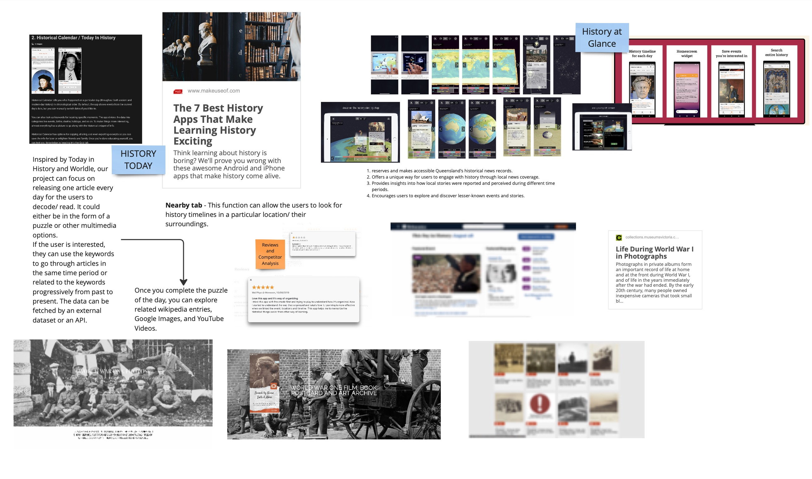

Observations from the Australian local history education research: Upon reviewing the Australian curriculum, specifically the content descriptions and achievement standards for students in years 9 and 10 , it's clear that they should be exposed to World War I events, the Australian wartime experience, and the importance of the Anzac legend. However, historical knowledge can be dense, and traditional classroom teaching methods can be uninteresting and overwhelming for high school students, inundating them with excessive information. A history education study conducted by Western Sydney University involved surveying 700 Australian students aged 12 to 18 (Hyland, 2023). The results showed that about two-thirds of these students did not feel a connection to certain historical events, such as those related to the Anzacs or the Federation (Hyland, 2023). Many students perceived Anzac history as irrelevant to their lives, despite having basic knowledge of World War I acquired through school. The lack of engagement and interest stemmed from the perception that these historical events occurred a long time ago and seemed distant from their contemporary lives (Hyland, 2023). Notably, some research has indicated an ongoing improvement in teaching methods. Educators are increasingly integrating multimedia resources, such as newspapers, radio broadcasts, and photographs, in an effort to present content in a more appealing manner to students (Hyland, 2023).
Observations from Gamification in historical education: According to the research about gamification in historical education, 97.5% of students stated that gamification learning activities could spark excitement. (Moseikina, M, 2022). There is a significant increase in their learning motivation when using gamified learning methods compared to traditional education. This approach maintained their interest in the subject, encouraged active learning through social interactions (Moseikina, M, 2022). 95% of students expressed satisfaction with the learning process, finding it easy, engaging, and valuable (Moseikina, M, 2022). The pedagogical model of gamified history education, as tested by the students, has proven to be highly effective in imparting fundamental historical knowledge and fostering a professional level of historical thinking (Moseikina, M, 2022). Therefore, based on the above research, our website is designed to encourage our audience to view history from a more specific and individualized perspective. They could sense the lives of South Australians on both the front lines and the home front during WWI, tangibly feeling the impact of the war on ordinary people, and recognizing the value of peace.